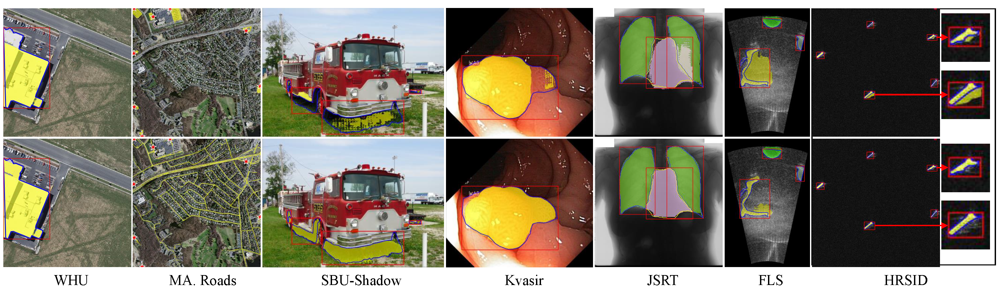

|
Experiments
| Model | #Tuning Sample | WHU (IoU↑) | Kvasir (mIoU↑) | SBU-Shadow (BER↓) | JSRT (mIoU↑) | FLS (mIoU↑) | HRSID (AP↑) |
|---|---|---|---|---|---|---|---|
| SAM | - | 43.5 | 79.0 | 62.4 | 78.5 | 69.7 | 38.2 |
| CAT-SAM-T | 1-shot | 86.8 | 83.4 | 78.0 | 93.0 | N/A | 46.2 |
| CAT-SAM-A | 88.2 | 85.4 | 81.9 | 92.6 | N/A | 44.9 | |
| CAT-SAM-T | 16-shots | 89.6 | 93.1 | 4.04 | 94.2 | 73.2 | 46.2 |
| CAT-SAM-A | 90.3 | 93.6 | 3.80 | 93.5 | 71.4 | 45.7 | |
| CAT-SAM-T | Full-shots | 93.3 | 94.5 | 2.54 | 94.4 | 81.7 | 51.4 |
| CAT-SAM-A | 93.6 | 94.3 | 2.39 | 94.6 | 82.0 | 52.9 |
Visual Results

@article{xiao2024cat,
title={CAT-SAM: Conditional Tuning Network for Few-Shot Adaptation of Segmentation Anything Model},
author={Xiao, Aoran and Xuan, Weihao and Qi, Heli and Xing, Yun and Ren, Ruijie and Zhang, Xiaoqin and Ling, Shao and Lu, Shijian},
journal={arXiv preprint arXiv:2402.03631},
year={2024}
}
|